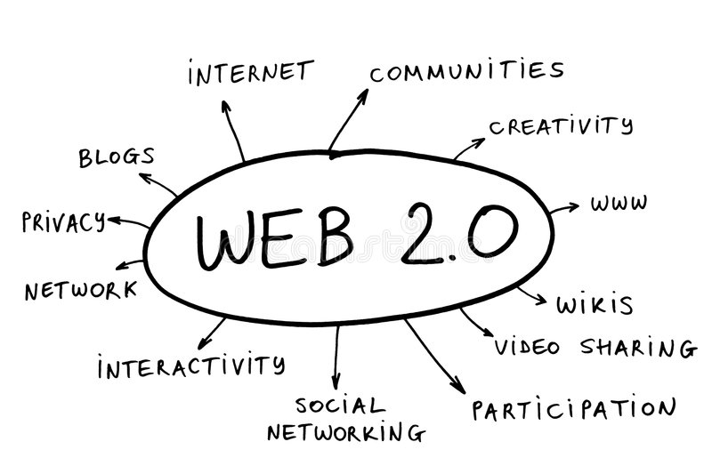
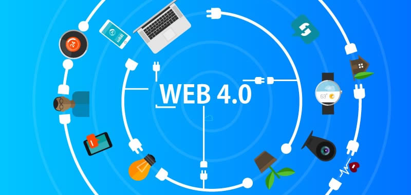

Introduccion a la Web
Web es una palabra inglesa que significa red o telaraña. Se designa como ‘la web’ al sistema de gestión de información más popular para la trasmisión de datos a través de internet.
Es el diminutivo de world wide web o www cuyas tecnologías para su funcionamiento (HTML, URL, HTTP) fueron desarrolladas en el año 1990 por Tim Berners Lee.
Para usar la web es necesario tener acceso a internet y un navegador web, por la cual se solicita una página dinámica llamada también página web.
El navegador web como, por ejemplo, Google Chrome, se comunica con el servidor web mediante el protocolo web o HTTP (hypertext transfer protocol) para entregar la petición deseada.
La web usa para la creación de sus páginas web el lenguaje HTML (hypertext markup language) que unificó la forma de buscar y crear información a través de internet. El conjunto de páginas web asociadas se sitúan en un sitio web como lo es, por ejemplo, Youtube.
Evolucion de la web
Web 1.0 |
Web 2.0 |
Web 3.0 |
Web 4.0 |
|
|---|---|---|---|---|
HISTORIA |
Esta Web es de solo lectura, ya que el usuario no puede interactuar con el contenido de la página (ningún comentario, respuesta, etc).Estando la información totalmente limitada a lo que el Webmaster pueda publicar. |
La Web 2.0 es también llamada Web social por el enfoque colaborativo y de construcción social de esta herramienta, donde el usuario es el ente más importante de información. |
Trata de poder enriquecer la comunicación mediante metadatos semánticos (ontologías) que aportan un valor añadido a la información, la diferencian y la hacen más inteligente. |
La Web 4.0 es un término que se va acuñando recientemente y trata de movernos hacia una Web Ubicua donde el objetivo primordial será el de unir las inteligencias, para que tanto las personas como las cosas se comuniquen entre sí para generar la toma de decisiones. |
CARACTERISTICAS |
|
|
|
|
VENTAJAS |
|
|
|
|
DESVENTAJAS |
|
|
|
|
VISTA |
 |  |
Videos de Complemento_U!
-
Video_estructura_Etiqueta
-
Estructura_head
-
Primeros pasos
-
Etiquetas de texto
-
Enlaces
- Enlaces parte 2
-
Listas e imagenes
-
Imagenes 1
-
Imagenes 2
HISTORIA DE LA WORLD WIDE WEB

World Wide Web o www es una red mundial de sitios web que se muestran a los usuarios por medio de código HTML interpretado por los principales navegadores (Chrome, Mozilla Firefox, Safari, Internet explorer entre otros). Se comporta como un espacio virtual donde intervienen varios aspectos entre los que podemos mencionar: el navegador, la dirección URL y el código HTML. La Web no es lo mismo que el Internet: la Web es una de las muchas aplicaciones construidas sobre Internet.
Caracteristicas de internet:
- Universal: extendida por todo el mundo
- Fácil de usar: no es preciso ser un experto informático
- Variada: se puede encontrar casi de todo
- Económica: el ahorro de tiempo y dinero es considerable
- Útil: muchos servicios e información. Acceso rápido
- Libre: se puede colocar cualquier información sin ninguna censura
- Anónima: permite ocultar la identidad
- Autoreguladora: las reglas que permiten que Internet funcione han salido del propio Internet.
- Un poco caótica: nadie asegura que todo funcione bien
- Insegura: si no se hace nada, la información va de forma insegura
- Creciente: Internet crece a un ritmo vertiginoso
Servicios de internet
- Mensajería : correo electrónico (EMAIL)
- Chat: conversación
- Noticias (NEWS)
- Transferencia de Ficheros (FTP)
- Terminal Remoto (TELNET)
- Búsqueda de Información…
Etapas entre browser y el Servidor
- -Conexión donde el browser busca el nombre del dominio para hacer contacto con la computadora.
- Solicitud donde el browser hace una petición al servidor con la información necesaria para realizarlo
- -Respuesta donde el servidor envía respuesta a la petición del browser mediante códigos
- Desconexión donde se termina la transferencia por el usuario o servidor.
Frontend y Backend

Frontend
Frontend: son los encargados de cuidar toda la apariencia y experiencia de usuario. Su misión es pasar todo el diseño gráfico de un sitio o aplicación web, a código, y proveer toda la interactividad a los clientes. Esta rama se puede subdividir en algunas especializaciones como: Arquitecto Frontend, Desarrollador JavaScript (frontend), etc.
Las tres tecnologías básicas que debe conocer y manejar un Frontend son:
- HTML: es el lenguaje de marcado para hacer websites
- CSS: hojas de estilos cascada, el diseño hecho código.
- JavaScript: es el único lenguaje que funciona actualmente dentro de los navegadores de manera nativa."
Backend
El Backend es la parte que no puedes ver, esta oculta porque contiene la información privada o sensible de nuestros usuarios.
Backend: resguardan los datos y la seguridad de las aplicaciones y sitios web. Su misión es crear y mantener toda la parte del sitio web que sucede en los servidores.
Pueden especializarse aún más en:
- SysAdmis
- DevOps
- Desarrollador JavaScript
Enlaces
Si quieres conocer mas informacion acerca de esto, visita los siguientes enlaces: